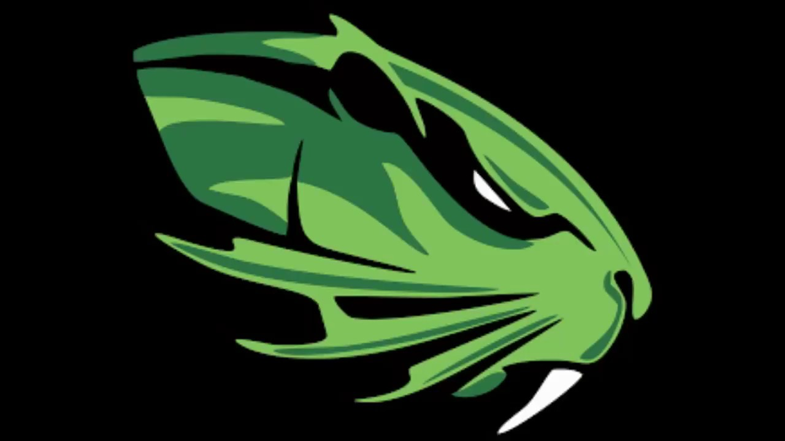

¿Qué tipo de escuela es TESOEM?
El Tecnológico de Estudios Superiores del Oriente del Estado de México (TESOEM) es una institución de educación técnica y tecnológica, que ofrece programas educativos enfocados en la formación práctica de los estudiantes.

¿Por qué es una institución importante?
El TESOEM es clave en el desarrollo de la infraestructura económica y la competitividad en diversas áreas, formando profesionales con conocimientos teóricos y prácticos que se adaptan a los retos del mercado laboral.
¿Qué competencias, conocimientos y habilidades crearás?
Los estudiantes de TESOEM desarrollan competencias técnicas, analíticas y profesionales, tales como:
- Competencias técnicas: conocimientos prácticos en su área de estudio.
- Competencias analíticas: habilidades para resolver problemas y tomar decisiones.
- Competencias profesionales: habilidades en trabajo en equipo, liderazgo y ética profesional.
¿Qué oportunidades te da el TESOEM?
El TESOEM brinda diversas oportunidades, como:
- Prácticas profesionales en empresas del sector productivo.
- Desarrollo de habilidades empresariales y fomentando el emprendimiento.
- Becas y apoyos económicos para continuar los estudios.
- Red de contactos profesionales con empresas y expertos del sector.
- Posibilidad de continuar estudios de posgrado.